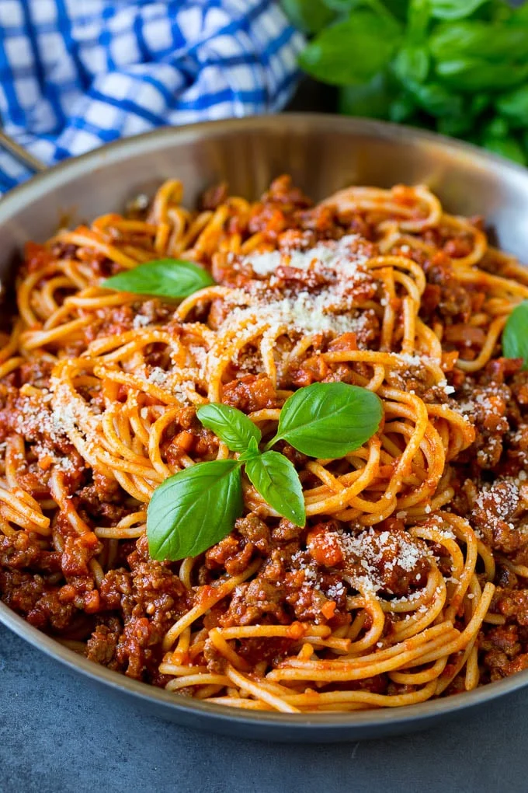

Spaghetti Bolognese

Description
A super easy recipe for a hearty Italian classic. Whether you're cooking for family, friends, or a loved one it's guaranteed to be a hit!
Whilst we prefer spaghetti, you can pair this delicious meaty sauce with any pasta of your choice
Ingredients (Serves 6)
Method
- Place a large saucepan on medium heat and add 1 tbsp olive oil.
- Once the oil has heated up, add 4 finely chopped bacon rashers and fry for 10 mins until golden and crisp.
- Reduce the heat, add the 2 onions, 2 carrots, 2 celery sticks, 2 garlic cloves and the leaves from 2-3 sprigs of rosemary, all finely chopped. Fry until the veg softens (about 10 mins).
- Increase the heat to medium-high, add 500g beef mince and cook, stirring often, until the meat is browned all over.
- Add 2 tins chopped tomatoes, the finely chopped basil leaves, 1 tsp dried oregano, 2 bay leaves, 2 tbsp tomatoo purée, 1 beef stock cube, 1 deseeded and finely chopped red chili (if using), 125ml red wine.
- Bring to the boil, reduce to a gentle simmer and cover with a lid. Cook for 1hr 15mins stirring occasionally, until you have a rich, thick sauce.
- Add the 75g grated parmesan. Taste to check the seasoning and stir.
- When the bolognese is nearly finished, cook 400g of your pasta of choice following the pack instructions.
- Drain the pasta, and serve together with the bolognese sauce.